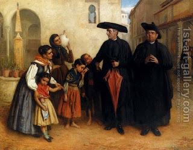

Zevachim 18 - A Priest Who is Under-dressed or Overdressed
Any Kohen priest who lacks the required four priestly garments, invalidates the sacrificial service. The four garments are pants, tunic, belt, and hat . Since the Torah said that " You shall girdle them with sash and put turbans on them and the priesthood will be for them an eternal law ", we see that when they have all the garments, they are considered priests, but if they lack some, they are considered strangers, and a stranger invalidates the service.
If they have extra garments, the extra ones invalidate the service because the required garments should be "on the body" and not on other garments. If the garments are too long, too short, or fitting well but shortened by the belt, some say that they are valid, and some say that they are not. However, all agree that if they were too long (dragging) but were shortened by the belt to the desired size, that is fine.
Art: John Bagnold Burgess - The Favourite Priest